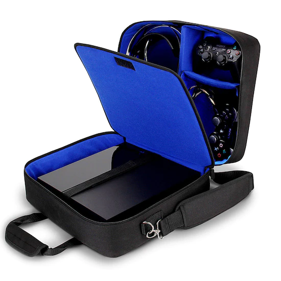
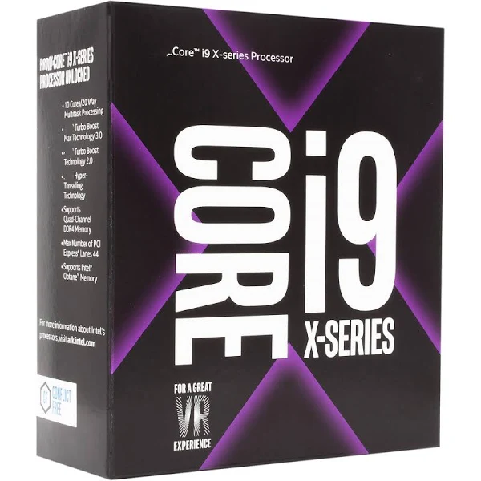
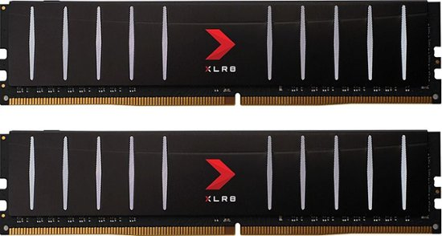
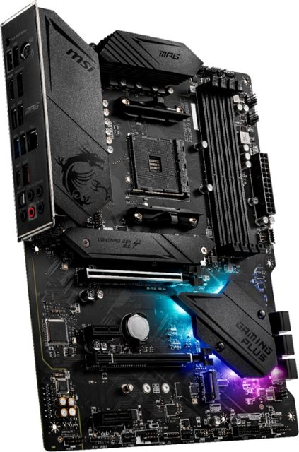
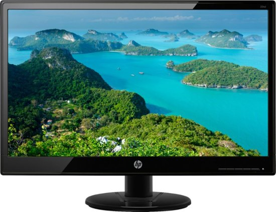
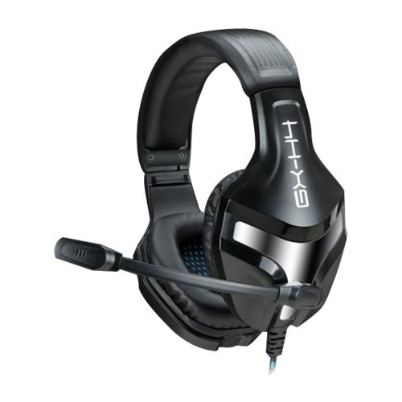
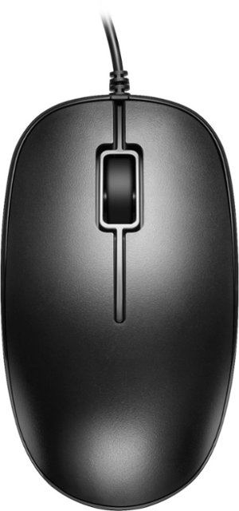
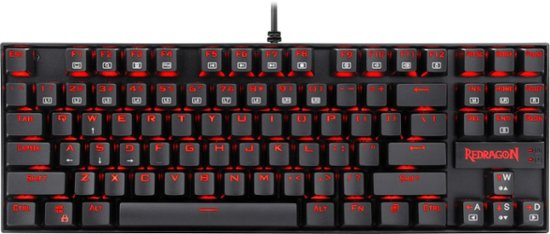

USA Gear - Sony PlayStation 4 Pro PS4 Pro 4K Travel Case Carrying Bag - Black |
 |
USA GEAR S13 Protective Case for Sony PlayStation 4 ProDurable Design. Built to last, the USA GEAR S13 Bag was designed to protect your console while withstanding the abuse of daily wear and tear. Complete with heavy-duty metal hardware, a reinforced weather-proof base, padded scratch-resistant interior and durable nylon material, this carrying case is perfect for travel or on-the-go use! Customizable Organization. The S13 provides two individual storage compartments that are separated by a secure compartment wall. |
|
CD8069504381800S RGSG CPU - Central Processing Units i9-10980XE Extreme Edition Processor |
 |
No Descripton Found. |
|
PNY - XLR8 Gaming 16GB (2x8GB) DDR4 2666MHz Low Profile Desktop Memory Kit |
 |
Take a PC to the extreme with PNY Low Profile DDR4 2666MHz CL16 desktop memory. XLR8 Gaming Low Profile memory offer the greatest amount of headroom of all the overclocked memory in the lineup as the modules are only 32 millimeters tall. The low profile heat spreader design is made of aluminum to improve thermal performance and heat dissipation while offering a wide range of compatibility, even in small form factor systems. It offer the same performance enjoyed in the rest of the XLR8 lineup now featuring a low profile aluminum heat spreader for systems where space is at a premium. |
|
Windows 10 Home - English - Blue |
 |
Windows 10 Home lets you always have the latest features and security. Experience faster start-ups, a familiar yet expanded Start menu, and amazing new ways to get stuff done. |
|
HP OMEN - 25L Gaming Desktop - 10th Generation Intel Core i5-10400 - 8GB Memory - NVIDIA GeForce GTX 1660 SUPER - 512GB SSD - Shadow Black |
 |
Ready to play: Skills are half the game and with the OMEN 25L Desktop PC, you really can’t make any more excuses for losing. With a powerful processor and graphics, it’ll carry you far. Make it yours: Really, do whatever you want. It’s easy to upgrade and with OMEN Gaming Hub's growing list of customization and optimization features it lets you do you. Go ahead, it’s okay to stare: Some people say looks don’t matter, but let’s be honest, they do. With a tempered glass side panel, a full-metal frame, and complete RGB control, we made this PC for people who enjoy the finer things in life -- like buying virtual hats just so you can flex on your friends. |
|
MSI - B550 GAMING PLUS (Socket AM4) USB-C Gen 2 AMD ATX GAMING Motherboard PCIE Gen 4 - Black |
 |
The MAG series was born through rigorous quality testing and designed to be a symbol of sturdiness and durability. Focused on providing the best user experience, the MAG series has a simple installation process coupled with a friendly user interface making it the best choice for entry level gamers. MAG B550 Gaming PLus features high-bandwidth and low-latency 2.5G plus Gigabit LAN for power users. Onboard 2.5Gbps connectivity provides incredible data transfer speed faster than ever before. MSI LAN Manager automatically classifies and prioritizes the latency-sensitive for your applications, giving you the best online experience with low latency. |
|
HP - Geek Squad Certified Refurbished 20.7" LED FHD Monitor - Black |
 |
Geek Squad® Certified Refurbished products are thoroughly, painstakingly and lovingly tested, so you can be sure that your device will work right, right away. Learn more about Immerse yourself in crystal-clear visuals with this refurbished 20.7-inch HP Full HD monitor. The 5 ms response time minimizes motion blur, delivering smooth images in fast-moving scenes, while the DVI-D and VGA ports offer connectivity to an array of devices. This HP Full HD monitor has an anti-glare coating, which eliminates reflections to deliver quality pictures even in bright environments. |
|
ENHANCE - INFILTRATE GX-H4 Over-the-Ear Headphones - Black |
 |
Enjoy immersive game play with this ENHANCE stereo headset. It has an omnidirectional microphone that transmits your voice with unbelievable clarity, and its padded noise-isolating ear cups and headband provide comfort during long gaming sessions. The 75-inch braided cable on this ENHANCE stereo headset plugs into any 35mm port without any additional setup. |
|
Best Buy essentials™ - USB Wired Mouse - Black |
 |
You can improve the way you work and navigate your computer without paying extra for all the bells and whistles. The Best Buy Essentials BE-PMWD3B USB Wired Mouse delivers accurate 1000 DPI control with its optical technology. It has just 3 buttons and an ambidextrous design for simple control. A 4.6 ft. cable allows flexible movement and placement, so you can work comfortably without getting tangled up in the cable. Compatible with both Windows and Mac computers, just connect the USB plug into your computer to start. Let us improve your computer navigation with this Best Buy-backed mouse. |
|
REDRAGON - K552-2 Kumara TKL Wired Gaming Mechanical Blue Switch Keyboard with Back Lighting - Black |
 |
The Redragon Kumara mechanical gaming keyboard features a solid aircraft-grade aluminium and ABS construction, plate mounted keys, double-shot injection moulded keycaps, high-end switches with mechanical ultra-last springs, crisp and bright adjustable red LED backlighting. High-Speed USB cable with gold-plated USB connector for a reliable connection which will stand up to fast hardcore gaming.
|
|
Razer - Goliathus Mobile Stealth Edition Gaming Mouse Pad - Black |
 |
Lay out this Razer Goliathus Mobile Stealth Edition mouse pad. It's only 0.05" thick, making it easy to tote in a closed laptop, and the top ensures quick movement of your mouse in all directions. This Razer Goliathus Mobile Stealth Edition mouse pad has a micro texture for optimal performance with laser and optical mice. |
|
Total cost of computer = $1,492.70 |
Acer - KA242YAbi 23.8 Full HD VA Monitor -AMDFreeSync-75Hz Refresh Rate, 1ms VRB |
 |
In competitive gaming, every frame matters. Introducing Acer's KA242Y gaming monitor - the Full HD resolution monitor that can keep up with your game play. Through AMD Radeon FreeSync technology, the game’s frame rate is determined by your graphics card, not the fixed refresh rate of the monitor, giving you a serious competitive edge. Plus, users can enjoy comfortable viewing experience while gaming via flicker-less and low dimming display. The design saves space on your desk and lets you place multiple monitors side by side to build a seamless big-screen display. |
|
Expensive Parts |
Pansonite Airflow ATX Mid-Tower Chassis PC Gaming Case with Door Opening Tempered Glass Side Panel,Side Ventilation, E-ATX Supported, 6 RGB Fans Pre-Installed |
 |
[TEMPERED GLASS PANELS] - A swing open tempered glass side panel for easy access to internal components, and the intakes on each side of the tempered glass front panel for additional airflow, were designed to enhance your gaming experience
[RGB LIGHTING SYSTEM] - Pre-installed with 3x140mm RGB fans in the front, 2x120mm RGB fans in the top, 1x120mm RGB fan in the rear, which can be controlled using LED control button to create a stunning lighting effect while providing great cooling
[SPACIOUS OPEN INTERIOR] - Support up to E-ATX motherboards, 8 cooling fans or liquid-cooling radiators up to 360mm, CPU coolers up to 160mm, and graphics cards up to 340mm. Plus, it can house 2 x 3.5” HDDs and 2 x 2.5” SSDs
[SUPERB CABLE MANAGEMENT] - A 30mm space behind the motherboard tray for hidden cable management, will help you clean up the interior and improve airflow. Removable dust filters on the top and bottom of the desktop gaming case for fast and convenient cleaning
[I/O PANEL] - Quick and easy access to I/O panel featuring 1 x USB 3.0 port, 2 x USB 2.0 ports, 1 x HD audio and mic ports, LED control button, reset/power button |
|
Thermaltake LCGS View 390 AIO Liquid Cooled CPU Gaming PC(AMD Ryzen 7 5800X 8-core, ToughRam DDR4 3600Mhz 16GB RGB Memory, NVIDIA GeForce RTX 3090, 1TB NVMe Gen4 M.2, Win 10 Home) V51B-X570-39V-LCS |
 |
AMD Ryzen 7 5800X CPU Watercooled, AMD X570 Chipset ATX motherboard, 16GB ToughRam DDR4 RGB, 1TB NVMe Gen4 M.2, WiFi, Windows 10 Home
NVIDIA RTX 3090 24GB Video Memory, 3x Display Port/1x HDMI
Closed loop liquid cooling with 360 millimeter radiator
2x USB 3.0, 2x USB 2.0, 1x Headphone, 1x Mic Ports
Full tower with 3-sided 4 millimeter thick tempered glass panels |
|
A-Tech 64GB Kit (4 x 16GB) for Dell XPS 8930 T8930 8920 T8920 8910 T8910 8900 T8900 Desktop Computer Memory Ram Modules |
 |
64GB Kit (4 x 16GB) DDR4 PC4-21300 2rx8 1.2v DESKTOP Memory Modules (288-Pin DIMM 2666MHz)
Genuine A-Tech Brand Lifetime Warranty! Toll Free Technical Support
Designed for Dell XPS Series 8900 T8900 8910 T8910 8920 T8920 8930 T8930 Towers & Silver Special Edition (SE) VR Ready Gaming Desktop Computer Upgrading |
|
Mini Desktop Computer, Mini PC Win10 Operating System 16GB 32GB DDR4 3x4K at 60Hz 2.9GHz to 4.2 GHz Gigabit Ethernet Micro PC 100‑240V |
 |
Win10 Operating System: Win10 restores the popular start menu from Win7 and introduces new features, such as the Edge internet explorer, which allows you to label web pages on the screen.
Large Memory: 256GB, 512GB, 1TB M.2 NVME SSD ROM, providing storage space for pictures, videos, music, etc., to meet your daily needs for storage space.
Stable Performance: RAM16GB, 32GB DDR4, massive high bandwidth memory to provide you with a high impact gaming experience, ensuring smoother and stable operation.
Image Processing: For AMD Radeon graphics GPU, graphics on processors with shared video memory provide high quality image for Internet use, basic photo editing, and casual games.
Compatibility: High Definition Multimedia Interface compatible + DP + Type C trial output 3x4K at 60Hz extended viewing options, you can connect the device to a high definition display to set up three screens. |
|
HP Q1K34A NVIDIA Quadro GV100 Graphic Card |
 |
HPE NVIDIA QUADRO GV100 GPU MODULE |
|
ASUS ROG Strix X370-F GAMING AMD Ryzen AM4 DDR4 HDMI DisplayPort M.2 ATX X370 Motherboard with USB 3.1 |
 |
Powered by AMD Ryzen AM4, 7th generation Athlon and HD 2000 series processors to maximize connectivity and speed with NVMe M.2, front-panel USB 3.1 and Gigabit LAN
5-Way Optimization with Auto-Tuning and Fan Xpert 4 automatically tailors overclocking profiles to your unique build for maximum OC performance and dynamic system cooling
Unmatched Personalization with ASUS exclusive AURA Sync RGB lighting, two additional RGB headers and a 3D-printing friendly design
Dual Patent-pending SafeSlot features an injection molding process that integrates metal framing for a stronger, firmly anchored PCIe slot built for heavyweight GPUs
Industry-leading 8-channel HD audio driven by Japanese capacitors features an onboard LED-illuminated design
Gaming durability: ASUS SafeSlot and premium components for maximum durability
Audio: Supports up to 32-Bit/192kHz playback
|
|
Z-Edge U27P4K 27-inch Gaming Monitor Ultra HD 4K 3840x2160 IPS LED Monitor, 300 cd/m², 14 ms Response Time, HDMIx2+DPx1, Built-in Speakers, FreeSync Technology |
 |
[Ultimately Clear 4K UHD Monitor] With the gorgeous 3840*2160 resolution, the 27 inch monitor provides the exceptional stunning and lifelike images, allowing you to capture flawless details. Combined with HDR10 technology, the monitor delivers the brilliant picture quality, makes the deep blacks and bright whites, easily find every details even in the darkest or brightest scenes. Immersing yourself completely with phenomenal image precision
[Advanced IPS Panel] Built in the high-end IPS panel, the monitor enlarges the viewing angle to a greater extend, providing the 178°panoramic viewing angel, making it easy to share work or content. The IPS panel ensures the consistent accurate and vivid color of the video and images from all viewing angles.
[Versatile Connections]Featuring with the two HDMI inputs as well as the two Display ports, you can connect multiple devices to the monitor. Enjoy the crystal 4k UHD resolution at the 60Hz refresh rate via the HDMI port. Although the monitor has two built-in speakers, for the better sound performance you can add your own speaker or headphones through the 3.5mm audio port.
[FreeSync Support]Premium free sync technology virtually eliminates the screen tearing, stutter, and input latency, presenting you the exceptional gaming experience. Flicker free and low blue light features keep your eyes fresh after the prolonged use
[Ergonomic and Sophisticated Design] Support VESA mount 100*100mm, the display can be installed on the wall or the mounting arm at ease, selecting the optimum position for the monitor freely. Three-sided edge to edge screen and the ultra slim stand bring a minimalist look to this streamlined monitor, offering the visual feast to keep the focus on your content viewing pleasure |
|
SteelSeries Arctis 5 - RGB Illuminated Gaming Headset with DTS Headphone: X v2.0 Surround - for PC and PlayStation 4 - Black |
 |
Arctic 5 combines cutting edge audio technology with independent game and chat controls and RGB illumination for an immersive gaming experience
Arctic speaker drivers produce ultra-low distortion, paired with DTS headphone’s v2.0 surround sound for rich, immersive audio
Widely recognized as the best mic in gaming, arctic clear cast bidirectional microphone delivers studio quality voice clarity and background noise cancelation
The inline USB chat mix dial balances game audio and chat volume on the fly
Padded air weave ear cushions and adjustable, steel reinforced headband provide long-lasting comfort and durability |
|
ZMKM Wired Mouse Home Business Desktop Computer Eating Chicken League of Legends and Other Gaming Mice |
 |
The micro switch has high installation sensitivity and quick response
Breathing light to indulge passion unabated
Fully consider the different needs of users to create professional light game games
Stable performance, high-speed response, precise operation and game play without lag |
|
Durgod Hades 68 RGB Mechanical Gaming Keyboard - 65% Layout - Cherry Profile - NKRO - USB Type C - Aluminium Chassis |
 |
RGB Backlit: 16.8 Million Color combinations , multiple backlit mode ( Radar, Ripple, Wave, Nebula , Waves, Gradient, Breathing, Star , Laser, Snake and race light mode), no drivers needed. Plug & Play small form factor keyboard
The Durgod Hades 68 keys Features a Sturdy Aluminium case and Double Shot Translucent Shinethru Keycaps ; Ansi US International Layout
Supports DURGOD Hera Engine software : ( Upgrade your keyboard firmware on the go and set up complex macros or rebind keys as you wish) and customize lighting effects
Two Different Cables : Type C To Type C USB Cable-3.3FT (1M) and Type-C to type-A USB cable 5.9FT/ (1.8M) ; Logo Sticker and keypuller included.
Compatibility with Mac and Windows: Compatible with Windows 10, Win 8, Win 7, Win Vista, Windows XP and Mac OS (Might need to remap some key through the software) ; The keyboard is adapted for all environment, Home & Office use.
|
|
Acer NP.MSP11.008 Predator RGB Mousepad,NP.MSP11.008,Blue |
 |
Super low friction, micro textured Hard surface
16.8M RGB colour options with 6 different light effect and 4 brightness levels
Non slip silicon base |
|
Total cost of computer = $22,364.50 |
TM Desktop Computer Core i7, 16GB, 500GB SSD, 2 New 24in Monitors, Wireless Keyboard and Mouse WiFi, 4 in 1 USB Hub Win 11 Prot |
 |
TM 9020 desktop Configured with Intel’s top of the line Core i7 series processor so you can expect very fast, reliable, and consistent performance for an exceptional PC experience.
Connectivity: Has 6 x USB 3.0, 4 x USB 2.0, 2 x Display Ports, 1 x VGA, Serial Port, Audio Ports, Optical Drive, RJ-45 (Ethernet Port), Included Peripherals: Wireless Keyboard and Mouse, USB Wi-Fi Adapter and Bluetooth, DisplayPort to HDMI.
Arrives with 16 GB Memory and 500 GB Solid State Drive for efficient multi-tasking.
A brand-new installation of the latest Microsoft Windows 11 Pro Operating System.
The TM Quantum 4 Port USB Hub: TM USB Hub Transfers data at the speed of 480 Mb/s and TM desktop is Compatible/Replacement for Dell OptiPlex 9020. The hub is sleek and compact, and it easily fits in your pockets and backpack so that you can carry it with you anywhere and use whenever you need. This USB 3.0 4 ports external hub offer a high speed and allows you to connect to a variety of USB devices such as scanners, printers, digital cameras, camcorders, speakers, mice, keyboards, external drives, MP3 players and more. |
|